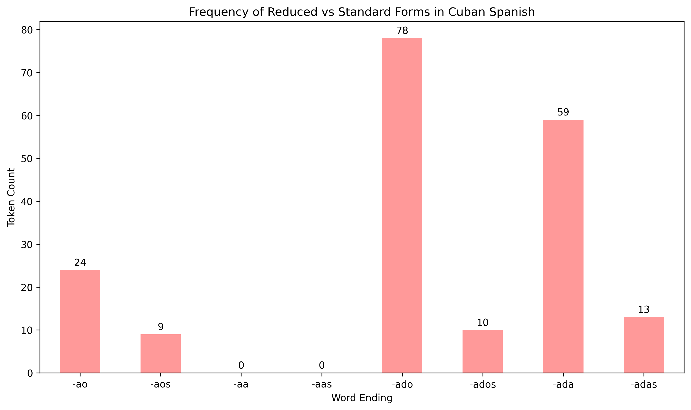
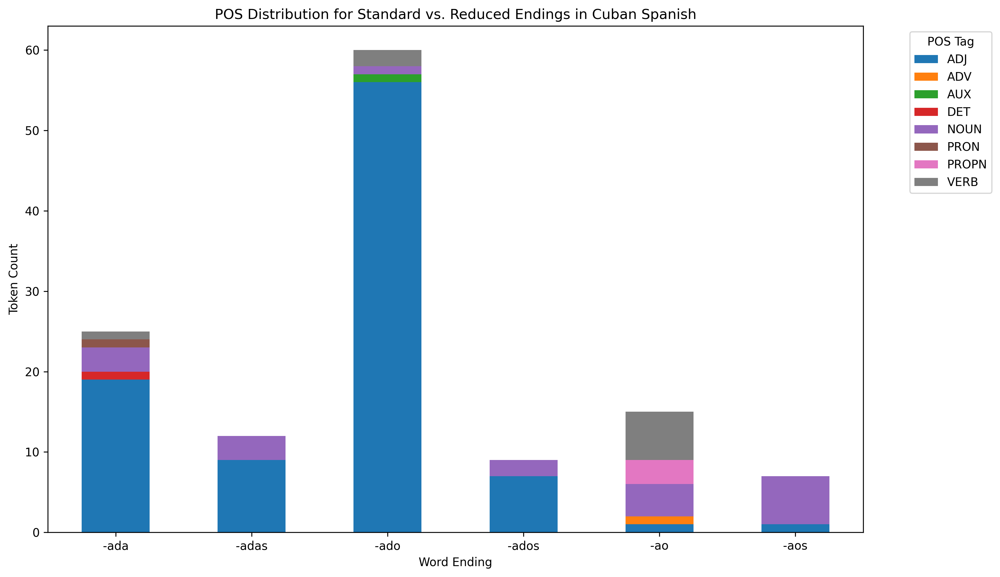

About
Hello, welcome to my research website! This project discusses orthographic and phonological changes in Cuban Spanish, specifically looking at -ado -> -ao and other variants.
Dataset
I used El Corpus Del Español to collect linguistic data from online blog-style postings, filtering for posts from Cuba. I looked up specific words that follow this pattern, like "pescado" and "cuidado", as well as their simplified outputs "pescao" and "cuidao". Taking about 30 blog posts, I combined them in a text file to further clean the data.
Methods
This analysis explores some common sound changes in Cuban Spanish in casual speech, specifically in written orthography. After collecting excerpts from El Corpus del Español, I cleaned the raw text by:
- converting text to lowercase
- removing punctuation, numerical figures, and spaces
- tokenizing each individual word in text
- keeping accent marks (comparing qué vs que)
In python, I used 're' to clean my text and locate spelling patterns reflecting the phonological changes ('pescao' from 'pescado'). Keeping accents and specific Spanish characters 'ñ' was important when cleaning this text to compare forms later. I got frequency counts with a word_fre() function, looping through tokens and counting them. To test the sound changes, I defined a list of target words (e.g., pescao ~ pescado) and then extracted all tokens ending in: -ao, -aos (from -ado/-ados), -aa, -aas (hypothetical -ada/-adas).
I did searches for all forms (-ao, -aa, -aos, and -aas), example of code line below:
- ao_forms = [w for w in cuban_words if re.search(r'ao$', w)]
Results & Interpretation
Visualization, key numerical results. what the results mean and why these patterns appear. "What I'd do next"
The graph above shows frequency for all 8 standard and reduced forms that I analyzed.
The graph above shows the part of speech distribution for all 8 forms.
- Co-founded organization promoting gender equity and leadership development for women.
- Organized monthly meetings, community events, and member recruitment initiatives.